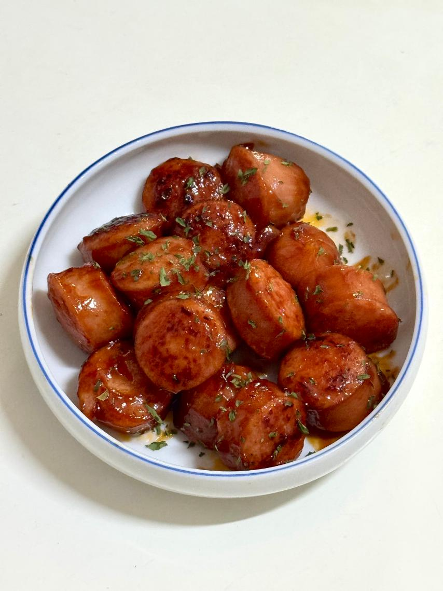

- 소제지볶음 -
케첩 풍미 가득한 밥도둑

📝 재료
- 소세지 - 120g
- 케첩 - 1.5 큰술
- 양조간장 - 1 큰술
- 올리고당 - 1 큰술
🍳 만드는 법
- 팬에 기름을 두르고 예열한 뒤, 소세지를 넣어 볶아줍니다.
- 소세지가 노릇하게 익으면 케첩, 간장, 올리고당을 넣고 골고루 볶아줍니다.
- 양념이 잘 배어들면 불을 끄고 마무리합니다.
💡 TIP
양조간장 대신 진간장을, 올리고당 대신 물엿을 사용해도 맛에는 큰 차이가 없어요.